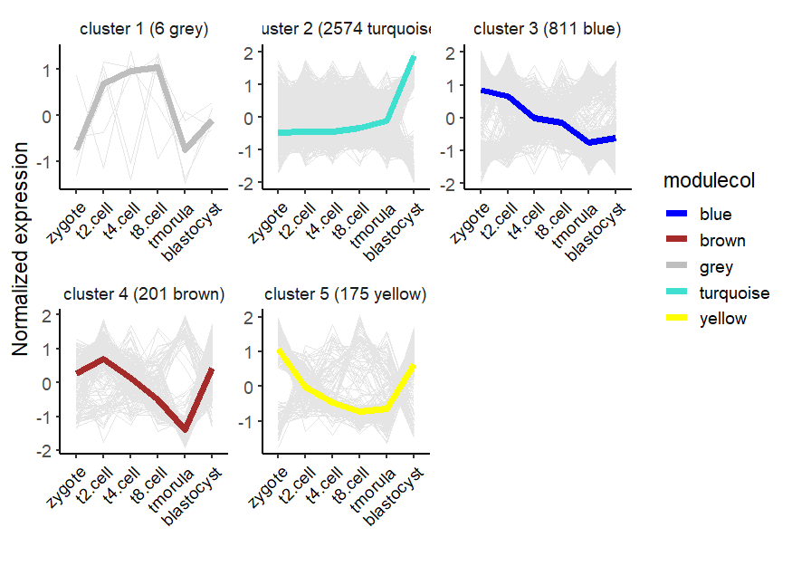
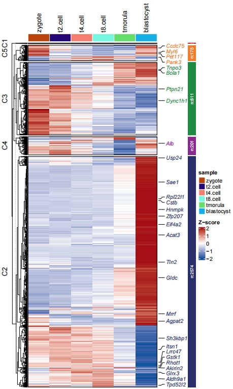
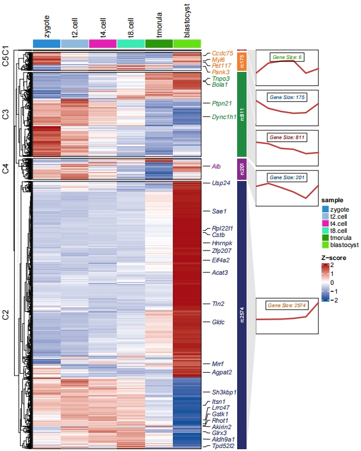

Chapter 4 Parse WGCNA output
WGCNA stands for Weighted Gene Co-expression Network Analysis. It’s a widely used bioinformatics method for analyzing high-throughput gene expression data. It will also cluster the expression data into different clusters. ClusterGvis also can parse the WGCNA output results and analysis biological significance for each cluster.
For detailed WGCNA tutorial, you can visit https://edo98811.github.io/WGCNA_official_documentation/. ClusterGvis accepts an object from one-step network construction and module detection
Related example code(not run):
net = blockwiseModules(datExpr, power = 6,
TOMType = "unsigned", minModuleSize = 30,
reassignThreshold = 0, mergeCutHeight = 0.25,
numericLabels = TRUE, pamRespectsDendro = FALSE,
saveTOMs = TRUE,
saveTOMFileBase = "femaleMouseTOM",
verbose = 3)Pass to clusterData to obtain plotting data. Note that the exp provided here should be the expression matrix after WGCNA filtering. It’s a transposed matrix, corresponding to the datExpr in the WGCNA example code:
datExpr0 = as.data.frame(t(femData[, -c(1:8)]));
names(datExpr0) = femData$substanceBXH;
rownames(datExpr0) = names(femData)[-c(1:8)];
gsg = goodSamplesGenes(datExpr0, verbose = 3);
gsg$allOK
if (!gsg$allOK)
{
# Optionally, print the gene and sample names that were removed:
if (sum(!gsg$goodGenes)>0)
printFlush(paste("Removing genes:", paste(names(datExpr0)[!gsg$goodGenes], collapse = ", ")));
if (sum(!gsg$goodSamples)>0)
printFlush(paste("Removing samples:", paste(rownames(datExpr0)[!gsg$goodSamples], collapse = ", ")));
# Remove the offending genes and samples from the data:
datExpr0 = datExpr0[gsg$goodSamples, gsg$goodGenes]
}
sampleTree = hclust(dist(datExpr0), method = "average");
# Plot the sample tree: Open a graphic output window of size 12 by 9 inches
# The user should change the dimensions if the window is too large or too small.
sizeGrWindow(12,9)
#pdf(file = "Plots/sampleClustering.pdf", width = 12, height = 9);
par(cex = 0.6);
par(mar = c(0,4,2,0))
plot(sampleTree, main = "Sample clustering to detect outliers", sub="", xlab="", cex.lab = 1.5,
cex.axis = 1.5, cex.main = 2)
# Plot a line to show the cut
abline(h = 15, col = "red");
# Determine cluster under the line
clust = cutreeStatic(sampleTree, cutHeight = 15, minSize = 10)
table(clust)
# clust 1 contains the samples we want to keep.
keepSamples = (clust==1)
datExpr = datExpr0[keepSamples, ]We load a test WGCNA object which ran with WGCNA using exps data:
data("net")
str(net)
# List of 10
# $ colors : Named num [1:3767] 1 1 1 1 1 1 1 1 1 1 ...
# ..- attr(*, "names")= chr [1:3767] "Oog4" "Psmd9" "Sephs2" "Nhlrc2" ...
# $ unmergedColors: Named num [1:3767] 1 1 1 1 1 1 1 1 1 1 ...
# ..- attr(*, "names")= chr [1:3767] "Oog4" "Psmd9" "Sephs2" "Nhlrc2" ...
# $ MEs :'data.frame': 6 obs. of 5 variables:
# ..$ ME1: num [1:6] -0.225 -0.251 -0.236 -0.196 0.018 ...
# ..$ ME2: num [1:6] 0.564 0.423 0.103 -0.113 -0.456 ...
# ..$ ME3: num [1:6] 0.228 0.448 0.107 -0.281 -0.766 ...
# ..$ ME4: num [1:6] 0.62653 -0.00404 -0.26899 -0.44759 -0.35935 ...
# ..$ ME0: num [1:6] -0.497 0.461 -0.162 0.587 -0.411 ...
# $ goodSamples : logi [1:6] TRUE TRUE TRUE TRUE TRUE TRUE
# $ goodGenes : logi [1:3767] TRUE TRUE TRUE TRUE TRUE TRUE ...
# $ dendrograms :List of 1
# ..$ :List of 7
# .. ..$ merge : int [1:3766, 1:2] -1089 -1087 -1091 -377 -1092 -1104 -1054 -1095 -1088 -1064 ...
# .. ..$ height : num [1:3766] 0.19 0.19 0.19 0.19 0.19 ...
# .. ..$ order : int [1:3767] 2953 3637 3065 3270 3529 3660 3018 3600 3558 3665 ...
# .. ..$ labels : NULL
# .. ..$ method : chr "average"
# .. ..$ call : language fastcluster::hclust(d = as.dist(dissTom), method = "average")
# .. ..$ dist.method: NULL
# .. ..- attr(*, "class")= chr "hclust"
# $ TOMFiles : chr "femaleMouseTOM-block.1.RData"
# $ blockGenes :List of 1
# ..$ : int [1:3767] 1 2 3 4 5 6 7 8 9 10 ...
# $ blocks : num [1:3767] 1 1 1 1 1 1 1 1 1 1 ...
# $ MEsOK : logi TRUEParse the object:
expt <- t(exps)
# get data
cw <- clusterData(obj = expt,
cluster.method = "wgcna",
object = net)
str(cw)
# List of 3
# $ wide.res:'data.frame': 3767 obs. of 9 variables:
# ..$ zygote : num [1:3767] 0.6747 0.3143 -0.0799 -0.1841 0.7904 ...
# ..$ t2.cell : num [1:3767] 0.511 1.083 1.14 0.497 -0.247 ...
# ..$ t4.cell : num [1:3767] 0.702 0.598 0.698 0.794 0.668 ...
# ..$ t8.cell : num [1:3767] 0.565 0.222 0.48 0.985 0.826 ...
# ..$ tmorula : num [1:3767] -0.743 -0.45 -0.636 -0.363 -0.273 ...
# ..$ blastocyst: num [1:3767] -1.71 -1.77 -1.6 -1.73 -1.76 ...
# ..$ gene : chr [1:3767] "Oog4" "Psmd9" "Sephs2" "Nhlrc2" ...
# ..$ cluster : num [1:3767] 2 2 2 2 2 2 2 2 2 2 ...
# ..$ modulecol : chr [1:3767] "turquoise" "turquoise" "turquoise" "turquoise" ...
# $ long.res:'data.frame': 22602 obs. of 6 variables:
# ..$ cluster : num [1:22602] 2 2 2 2 2 2 2 2 2 2 ...
# ..$ gene : chr [1:22602] "Oog4" "Psmd9" "Sephs2" "Nhlrc2" ...
# ..$ modulecol : chr [1:22602] "turquoise" "turquoise" "turquoise" "turquoise" ...
# ..$ cell_type : Factor w/ 6 levels "zygote","t2.cell",..: 1 1 1 1 1 1 1 1 1 1 ...
# ..$ norm_value : num [1:22602] 0.6747 0.3143 -0.0799 -0.1841 0.7904 ...
# ..$ cluster_name: chr [1:22602] "cluster 2 (2574 turquoise)" "cluster 2 (2574 turquoise)" "cluster 2 (2574 turquoise)" "cluster 2 (2574 turquoise)" ...
# $ type : chr "wgcna"Now we can visualize the parsed data by using ClusterGvis:
# add gene name
markGenes = rownames(exps)[sample(1:nrow(exps),30,replace = F)]
# plot
visCluster(object = cw,
plot.type = "line",
ncol = 3)
Heatmap:
# heatmap
pdf('netht.pdf',height = 10,width = 6,onefile = F)
visCluster(object = cw,
plot.type = "heatmap",
markGenes = markGenes)
dev.off()
Add line annotation:
# heatmap + line
pdf('nethtl.pdf',height = 10,width = 8,onefile = F)
visCluster(object = cw,
plot.type = "both",
markGenes = markGenes)
dev.off()